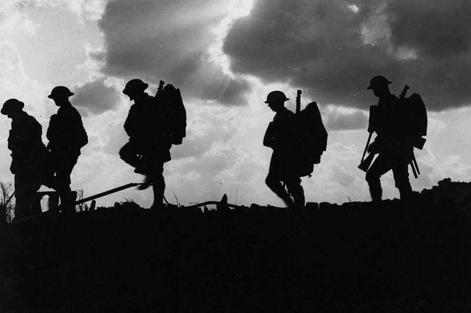
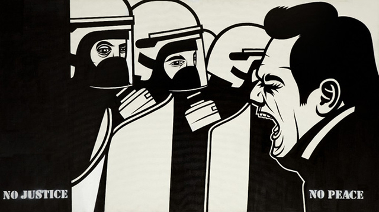
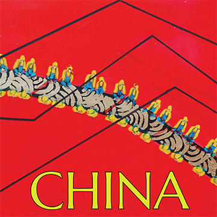
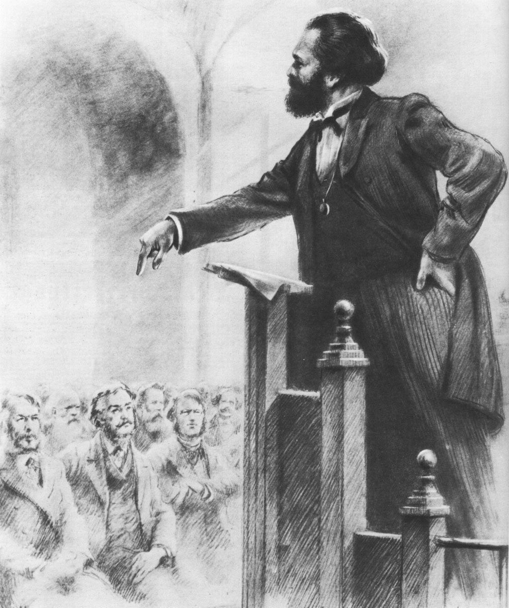

Theory  Imperialism ReadImperialism today: a reassessment32 min WatchLenin's Imperialism, explained48 min ListenThe new age of warsEp. 74 BookImperialism — V.I. LeninWellred · £9
Theory Dialectical Materialism ReadWhat is dialectical materialism?28 min WatchDialectics in 40 minutes40 min ListenPhilosophy and revolutionEp. 12
Theory  The State ReadMarxism and the state24 min BookThe State and Revolution — read free on siteLenin · online
The Russian Revolution Read1917: ten days that shook the world35 min WatchOctober — anatomy of an insurrection55 min ListenWas October a coup?Ep. 40 BookHistory of the Russian RevolutionTrotsky · £18 Event 
Leon Trotsky ReadTrotsky's relevance today26 min ListenThe permanent revolutionaryEp. 58 BookMy Life — Leon TrotskyWellred · £15 Figure 